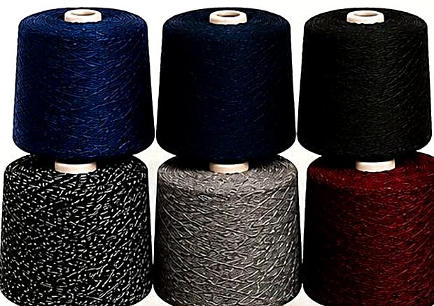
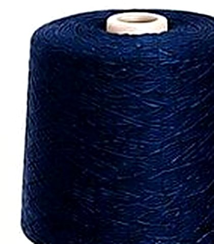
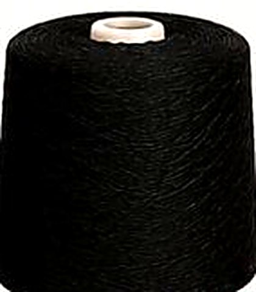
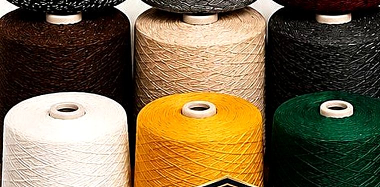
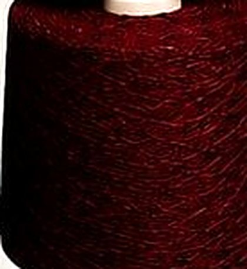
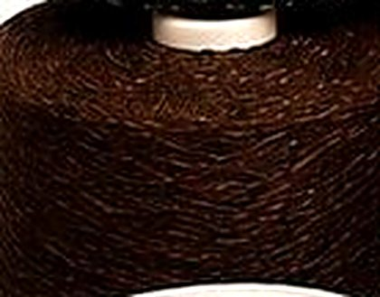
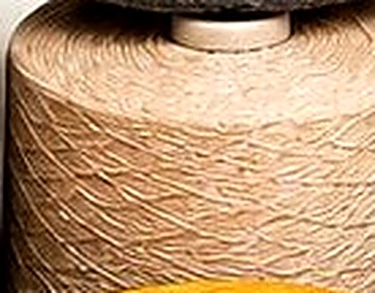
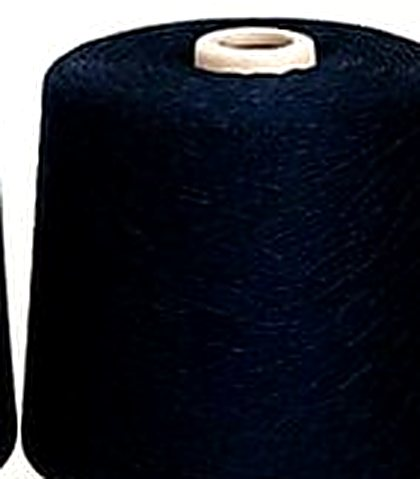

Sri Masani Amman Textiles manufactures premium 1st quality OE yarn and threads in Tirupur — stronger, smoother and consistent on every single cone, in a colour range that covers whatever your line runs.

Four things every buyer checks before they place a repeat order — and four things we hold steady on every batch that leaves our floor.
A tight, even twist that holds through winding, knitting and marping without snapping or shedding.
Uniform 2s count on every cone, so your machines run predictably from the first cone to the last.
Fewer breaks on the line and a cleaner fabric surface — the kind of finish your own customers notice.
Shades that stay true through repeated washing — no bleeding, no fading, no surprises after delivery.
Open-end spun yarn built for real production floors — heavy enough to run hard, smooth enough to finish clean, and consistent enough that you stop thinking about it.
| Specification | Detail |
|---|---|
| Yarn Type | Open-End (OE) spun yarn |
| Count | 2s — 1st quality grade |
| Shade Range | 14+ ready shades · custom matching |
| Applications | Knitting, marping, mop & wipe production |
| Quality Check | Count, strength & shade, every batch |
| Order Sizes | Sample cone to full bulk loads |

 1st Quality Grade
1st Quality Grade
Real cones from our own production — the shades, the winding and the fibre texture you'll receive.

Ready stock · six shades
Navy Blue
Black
Graphite Melange
Grey Melange

Warm & bright shades
Maroon
Coffee Brown
Bright White
Dark NavyOur 2s OE yarn runs across the trade — and a good share of it goes to units making household cleaning mops.
Strong, absorbent yarn for household cleaning-mop heads.
Consistent count for hosiery, knitwear and garment units.
Smooth flow and an even finish across the full width.
From deep navy to bright milk white — every shade below is available in 2s 1st quality OE yarn, with custom matching on request.
Don't see your shade? Send us a reference — we can match it.
A controlled four-stage process so that what leaves our floor is the same quality every single time.
We start with graded raw fibre chosen for staple strength and absorbency — the two properties everything downstream depends on.
Spun to a uniform 2s count with a controlled twist that balances softness against tensile strength.
Every batch is checked for count consistency, strength and shade accuracy before it is cleared for winding.
Evenly wound cones, packed to protect the shade in transit, dispatched against your production schedule.
 Best Quality Assured
Best Quality Assured
That line is on our poster because it is how we run the business. From the first sample cone to your largest bulk load, the standard does not move.